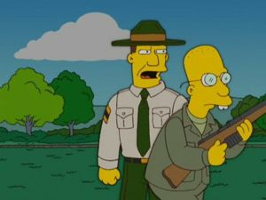

Observatorio
 De: La Frikipedia, la enciclopedia extremadamente seria.
De: La Frikipedia, la enciclopedia extremadamente seria.
lo mires por donde lo mires, un observatorio a lo que más se parece es a un ambientador grande de esos de enchufe...
 ¡Más brío, soldado! ¡Con esa actitud no conseguirá conservar su observatorio!
Principal arma usada por los astrónomos para proteger sus observatorios.
«¡Sí! ¡el observatorio es sólo mío! ¡¡¡MI OBSERVATORIO!!!»
~ Astrónomo hablando sobre su observatorio
«¡No puedo salir del observatorio! ¡otros astrónomos lo están esperando para ocuparlo, y se me están acabando los microscopios para arrojarles!»
~ Profesor Frink sobre su observatorio
Telescopio tamaño muy bestiajo, creado para que los astrónomos se entretengan mirando a las estrellas mientras le meten mano a su ordenador (no, no aspiran a más). Es un motivo de pugna para estos personajes de carácter ermitaño, que se alojan en un observatorio cuando otro astrónomo se aleja de él aunque sólo sean unos metros. Son muy posesivos con su lugar de juegos trabajo y se han llegado a celebrar lamentar muertes de bichitos de esta extraña especie.
Tipos de observatorio
- El observatorio pequeño: donde solo cabe un astrónomo debido a la falta de espacio.
- El observatorio pequeño de chocolate: es como un observatorio pequeño, pero de chocolate...sólo ha sido visto por Ralph.
- El observatorio grande: donde solo cabe un astrónomo debido a que el primero que llega echa a los demás con sus microscopios.
- El observatorio estrecho: donde no cabe ningún astrónomo... se pasan sentados el tiempo que no están dormidos y eso y la falta de movimiento (pero no era lo mismo) crean cierta dificultad para pasar por puertas estrechas (a esta dificultad también se la conoce como el sindrome de la barriga cervecera).
- El observatorio ancho: donde caben un astrónomo y sus veinte amantes (diox, ya no se ni lo que digo...).
- El observatorio oscuro: muy útil para astrónomos salidos ya que pueden usarlo para meter mano a sus ayudantes aprovechando la oscuridad. O lo harían si tuviesen ayudantes. Y los tendrían si permitiesen que otra persona aparte de ellos pisara sus observatorios. ¡Pero eso no puede permitirse! ¡Es mi observatorio, solo mio, mi precioso!
- El observatorio de jugete: un observatorio de tamaño tirando a pequeño que sirve para los pequeños astronomitos que quieren jugar a ser astrónomos grandes. Viene con microscopios tamaño mini de regalo.
- El bukkake-observatorio: el mejor conocido hasta la fecha, el telescopio tiene una lente especial para ver a las tías desnudas a varios kilómetros de distancia. El ideal para los astrónomos supersalidos porque no mojan (todos). Estos observatorios no abundan, y es difícil hacerse con uno, porque los astrónomos que los controlan están armados de microscopios hasta los dientes (¡como para no estarlo!).
Partes de un observatorio
- El telescopio: lo propiamente usado para observar. Ya sean estrellas o chicas desnudas. A gusto del consumidor.
- El ordenador del astrónomo: usado para
almacenar datos de interés jugar al buscaminas y descargar pr0n (y en casos extremos capítulos de Naruto).
- La silla del astrónomo: suele ser cómoda y resistente debido a las horas de uso y el bamboléo que sufre mientras el astrónomo ya ha descargado el pr0n.
- Alrededores: suelen estar plagados de astrónomos oportunistas que esperan el despiste del ocupante actual para hacerse con el control del observatorio. Además de eso suelen estar llenos de microscopios perdidos que el ocupante les lanza.
- Arsenal: o sala de los microscopios. Donde los astrónomos guardan sus armas para defenderse del posible invasor. ¿Para que si no iban a tener microscopios en un observatorio?
- Microscopio: principal arma usada por los astrónomos para proteger sus observatorios (sí, ya se que eso también lo pone en la foto de al lado y ¿qué?).
- Astrónomo: hombre, por rubios, morenos, pelirrojos, chinos, negros, moros... No pierda esta oportunidad de conseguir su astrónomo y dele nueva vida a su observatorio.
Preguntas frecuentes
- ¿Qué
coño es un observatorio?
- Un sitio donde se observan chicas desnudas. Eso explica porque los astrónomos los acaparan...
- ¿Puedo crear mi propio observatorio?
- No deberías, pues son formaciones del relieve como las montañas. Si intentas hacer tu propio observatorio casero, será débil y no aguantará el impacto de un microscopio.
- ¿Como puedo conquistar un observatorio?
- Con microscopios, con muchos microscopios. Aunque igual prefieres hacerlo pacíficamente, tendiéndole una trampa al astrónomo con una tía buena diciendo que está caliente y le dejará hacer lo que quiera con ella si sale del observatorio. Sólo los novatos salen. Los astrónomos experimentados saben que pueden ver tías en pelotas desde su observatorio y no acudirán a tu emboscada. O si acuden será armados hasta los dientes de microscopios.
- ¿Puedo usar microscopios del todo a cien para defender mi observatorio?
- No deberías, porque sólo podrás espantar a los astrónomos de clase B. Los astrónomos experimentados los esquivan como si nada. Es mejor usar los microscopios zuper reforzados del Profesor Frink ¡No acepte imitaciones!.
- ¿Puedo contratar francotiradores de microscopios para defender mi observatorio?
- Si lo haces no mereces llamarte astrónomo. Los astrónomos deben valerse de sus propios recursos para defender su observatorio. Además, si consigues mantener tu observatorio durante cinco años por tus propios medios, te dan un bukkake-observatorio para tí sólo (¡SIII!)
- ¿Cual es el tiempo medio que un astrónomo suele mantener su observatorio?
- Depende de la experiencia. Un astrónomo joven no suele aguantar más de dos días en su observatorio. Un astrónomo experimentado puede mantenerse en su bukkake-observatorio durante el resto de su vida (poco, ya que al ver las tías desnudas les entran infartos).
- ¿Puedo conquistar un observatorio con un sólo microscopio?
- Depende de tu habilidad con el noble arte de la
esgrima astronomía. Si eres un novato no podrás aguantar más de un asalto, y necesitarás más de tres cajas de microscopios para hacerte con un observatorio. En cambio, si eres un experto, podrás tomar el control de un observatorio con sólo la mirilla del microscopio. ¡¡¡SUERTE!!!
- ¿Si no soy astrónomo y mato a uno me convierto en uno de ellos?
- Sí y además, si el astrónomo tenía un observatorio tendrás que ocuparlo y defenderlo hasta que otro te lo quite. Y entonces deberás buscar otro... es la vida que los astrónomos han elegido...
¿Sabías que...
- ...un observatorio sirve para observar?
- ...si construyes un observatorio casero llegará un astrónomo y te echará con un microscopio?
- ...a los microscopios los carga el diablo?
- ...si tienes un microscopio y sabes cómo usarlo puedes considerarte astrónomo?
- ...los microscopios se pueden usar como arma arrojadiza o arma blanca?
- ...si eres propietario de un observatorio y no paras de mirar las estrellas es probable que otro astrónomo te lo quite?
- ...todos los astrónomos hacen severas prácticas militares para aprender a usar microscopios y defender sus observatorios?
- ...los astrónomos mojan un 50% menos que otros científicos?...
- ...y que esto se debe a que les gusta jugar con sus microscopios?
- ...si eres un científico deberás tomar precauciones (use microscopios Durex: ¡puro latex!)
- ...un observatorio del tipo grande se puede usar como cancha de baloncesto?
- ...un observatorio del tipo estrecho se puede usar para practicar posturas de Kamasutra con un microscopio?
- ...los astrónomos se reproducen por esporas?
- ...las esporas se reproducen por astrónomos?
- ...si eres Bart Simpson y ves un meteorito muy grande en el cielo, lo más probable es que en realidad no sea más grande que la cabeza de un Chihuahua?
- ...los astrónomos no duermen, pues perderían su observatorio?
- ...el profesor Frink les hará pensar, les hará reír y con una chica le gusta tararí?
- ...un observatorio no sirve para dominar el mundo?
- ...un microscopio SÍ sirve para dominar el mundo?
- ...los astrónomos están tan embobados con las estrellas porque los golpes que les daban los abusones les hacían ver estrellitas?
- ...si no ves las estrellas en un observatorio no puedes considerarte astrónomo?
- ...ver tías en pelotas a tantos aumentos hacen que los astrónomos mueran desangrados?
- ...yo no soy un astrónomo?
- ...tú tal vez lo seas?
- ...los observatorios no fueron construídos por nadie, aparecieron sin más como las montañas?
Autor(es):
- Nexo
- Frikiman
- Aque
- Epikurolibre
- Khazike Khashondo
- Schamali
- Genericool
Frikipedia 2005-2016, Licencia
GFDL 1.2 - Extraído por FrikiLeaks